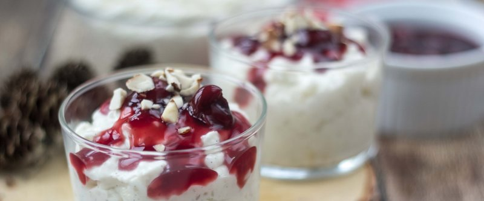

Датский рисовый пудинг Рисаламанде

3,5 ст. молока довести почти до кипения, добавить стручок ванили (или ванильную эссенцию), 1 ст.л. сахара. Промыть 1 ст. круглозернового риса и всыпать в молоко. Варить на маленьком огне 30-40 минут, периодически помешивая, пока рис не превратиться в кашу. Готовый рис переложить в глубокую посуду и оставить остывать.
Порубить 100 гр. миндаля, как можно мельче. Один орешек оставить целым. Взбить 500 мл. 33% сливок. Перемешать рис с миндальной крошкой и сливками.
Для соуса: 500 гр. вишни поместить в кастрюлю, засыпать 1 ст. сахара и 2 ст.л. крахмала. Помешивая, довести до густой массы.
Переложить рисовый пудинг в порционные формочки, полить теплым вишневым соусом.